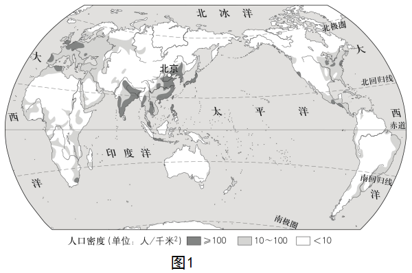
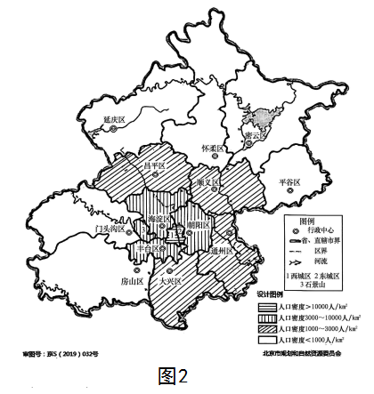

2024年北京市房山区初中学业水平考试地理试卷 · 选择题 第11、12、13、14、15题
北京市是一个人口稠密的大都市，学生针对北京市人口分布的问题进行探究。图1为世界人口密度图，图2为学生绘制的北京市人口密度图。读图，完成下面小题。


11. 通过绘制北京市人口密度图，可知北京市人口（ ）
A. 分布均匀B. 北密南疏
C. 昌平区、大兴区最稀疏D. 东城区、西城区最稠密
12. 依据绘制的北京市人口密度图，可知房山区人口密度（ ）
A. 大于10000人/km2B. 3000～10000人/km2C. 1000～3000人/km2D. 小于1000人/km2
13. 北京市位于世界人口稠密的（ ）
A. 亚洲东部B. 亚洲南部C. 欧洲西部D. 北美洲东部
14. 世界人口稠密地区主要分布于（ ）
A. 河流稀少的大陆内部地区B. 中低纬度的沿海地带
C. 终年严寒的高纬度地区D. 赤道附近热带雨林地区
某新能源汽车自主研发的电池技术已经达到了世界领先水平。2022年，借“一带一路”东风，该新能源汽车搭乘中欧班列“长安号”，从西安国际港务区出发，运往欧洲。如图为中欧班列“长安号”线路图。读图，完成下面小题。

15. 该新能源汽车能够赢得欧洲市场 青睐，得益于中国（ ）
青睐，得益于中国（ ）
A. 高新技术的发展B. 丰富的石油资源C. 劳动力数量的增多D. 国内市场需求增大